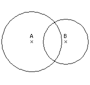
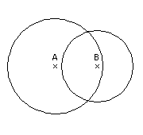
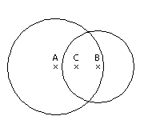
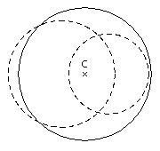
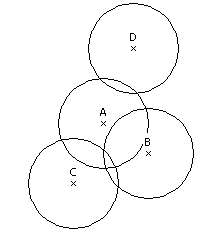
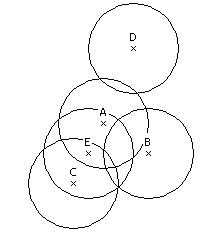
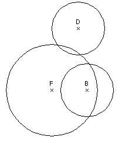
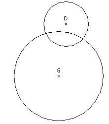

| Source file: | crash.{c, cpp, java} |
| Input file: | crash.in |
The Gorelians are a warlike race that travel the universe conquering new worlds as a form of recreation. Generally, their space battles are fairly one-sided, but occasionally even the Gorelians get the worst of an encounter. During one such losing battle, the Gorelians’ space ship became so damaged that the Gorelians had to evacuate to the planet below. Because of the chaos (and because escape pods are not very accurate) the Gorelians were scattered across a large area of the planet (yet a small enough area that we can model the relevant planetary surface as planar, not spherical). Your job is to track their efforts to regroup. Fortunately, each escape pod was equipped with a locator that can tell the Gorelian his current coordinates on the planet, as well as with a radio that can be used to communicate with other Gorelians. Unfortunately, the range on the radios is fairly limited according to how much power one has.
When a Gorelian lands on the alien planet, the first thing he does is check the radio to see if he can communicate with any other Gorelians. If he can, then he arranges a meeting point with them, and then they converge on that point. Once together, they are able to combine the power sources from their radios, which gives them a larger radio range. They then repeat the process—see who they can reach, arrange a meeting point, combine their radios—until they finally cannot contact any more Gorelians.
Gorelian technology allows two-way communication as long as at least one of them has a radio with enough range to cover the distance between them. For example, suppose Alice has a radio with a range of 40 km, and Bob has a range of 30 km, but they are 45 km apart (Figure 1). Since neither has a radio with enough range to reach the other, they cannot talk. However, suppose they were only 35 km apart (Figure 2). Bob’s radio still does not have enough range to reach Alice, but that does not matter—they can still talk because Alice’s radio has enough range to reach Bob.
|  |  |
| Figure 1: Alice and Bob can not talk | Figure 2: Alice and Bob can talk |
If a Gorelian successfully contacts other Gorelians, they will meet at the point that is the average of all their locations. In the case of Alice and Bob, this would simply be the midpoint of A and B (Figure 3). Note that the Gorelians turn off their radios while traveling; they will not attempt to communicate with anyone else until they have all gathered at the meeting point. Once the Gorelians meet, they combine their radios to make a new radio with a larger range. In particular, the area covered by the new radio is equal to the sum of the areas covered by the old radio. In our example, Alice had a range of 40 km, so her radio covered an area of 1600π km. Bob’s radio covered an area of 900π km. So when they combine their radios they can cover 2500π km—meaning they have a range of 50 km. At this point they will try again to contact other Gorelians.
|  |  |
| Figure 3: Alice and Bob agree to meet at the midpoint | Figure 4: Alice and Bob combine their radios |
This process continues until no more Gorelians can be contacted. As an example, suppose the following Gorelians have all landed and all have a radio range of 30 km: Alice (100, 100), Bob (130, 80), Cathy (80, 60), and Dave (120, 150). At this point, none of the Gorelians can contact anyone else (Figure 5). Now Eddy lands at position (90, 80) (Figure 6). Eddy can contact Alice and Cathy, so they arrange to meet at (90, 80), which is the average of their locations. Combining their radios gives them a range of √2700 ≈ 51.96 km (Figure 7).
|  |  |
| Figure 5: Nobody can talk | Figure 6: Eddy joins the group |
Now they check again with their new improved range and find that they can reach Bob. So they meet Bob at (110, 80) and combine their radios to get a new radio with a range of 60 (Figure 8). Unfortunately, this is not far enough to be able to reach Dave, so Dave remains isolated.
|  |  |
| Figure 7: Alice, Cathy, and Eddy team up | Figure 8: Bob joins the group |
Input: The input will consist of one or more data sets. Each data set will begin with an integer N representing the number of Gorelians for this dataset (1 ≤ N ≤ 100). A value of N = 0 will signify the end of the input.
Next will come N lines each containing three integers X, Y, and R representing the x- and y-coordinate where the Gorelian lands and the range of the radio (0 ≤ X ≤ 1000, 0 ≤ Y ≤ 1000, and 1 ≤ R ≤ 1000). Note that only the Gorelians' initial coordinates/range will be integral; after merging with other Gorelians they may no longer be integral. You should use double-precision arithmetic for all computations.
The Gorelians land in the order in which they appear in the input file. When a Gorelian lands, he merges with any Gorelians he can contact, and the process keeps repeating until no further merges can be made. The next Gorelian does not land until all previous merges have been completed.
Output: The output will be one line per data set, reporting the number of independent groups of Gorelians that remain at the end of the process.
| Example input: | Example output: |
| 5 100 100 30 130 80 30 80 60 30 120 150 30 90 80 30 6 100 100 50 145 125 10 60 140 15 160 145 20 130 135 25 80 80 30 0 | 2 3 |